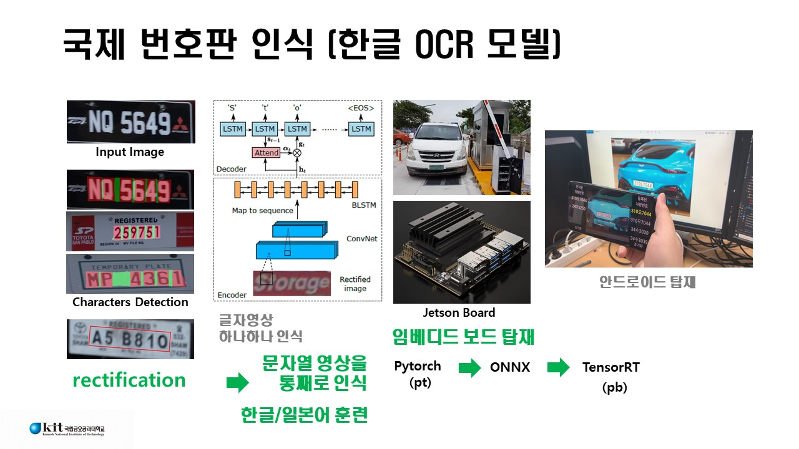
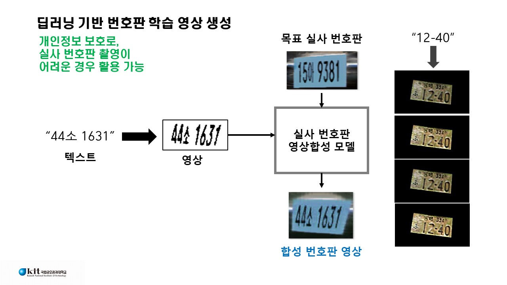
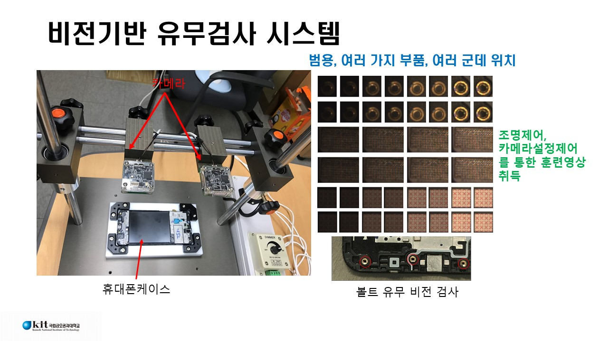
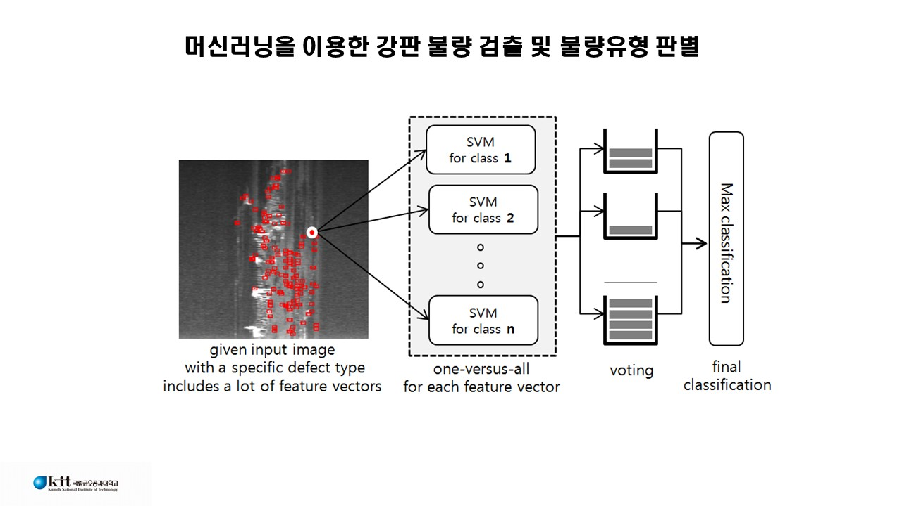
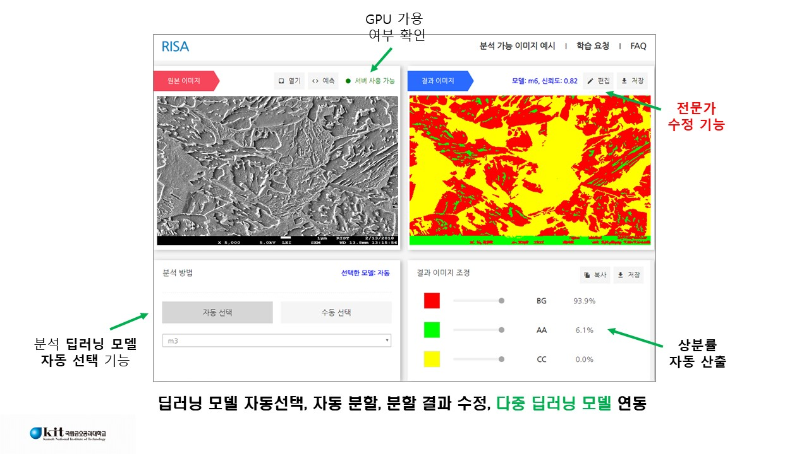
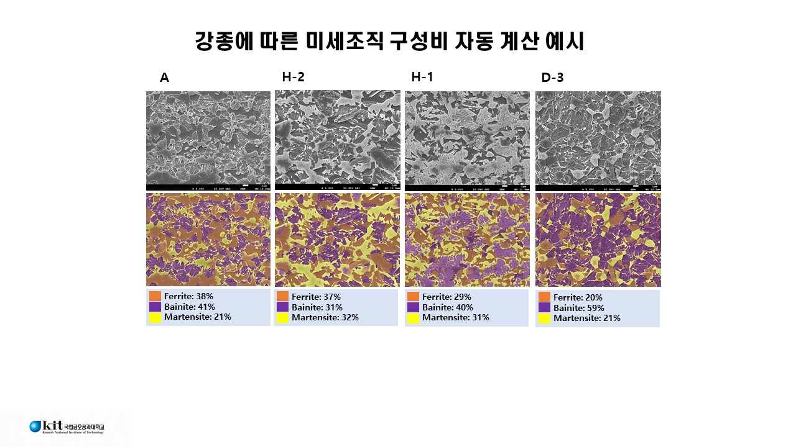
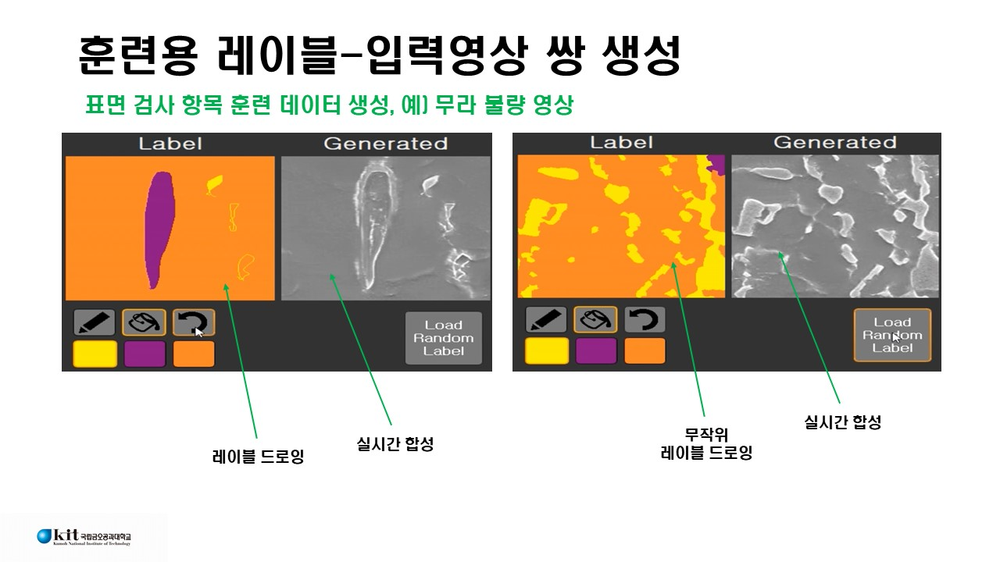
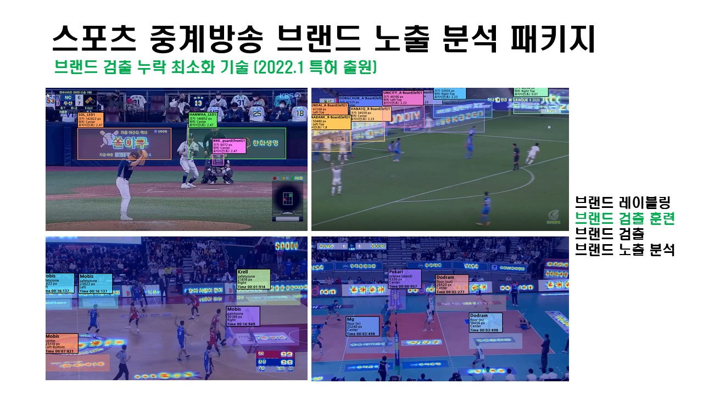
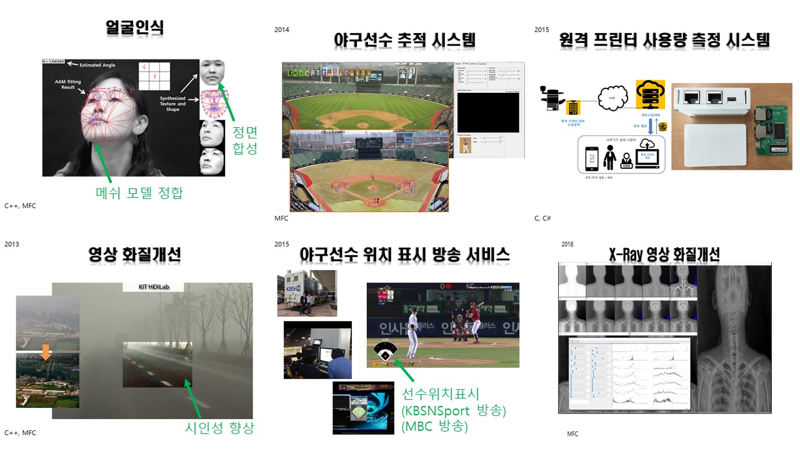

Prof. Ko (CVPR Lab.)
Notice
nonezero AT kumoh.ac.kr
@onenzero on youtube
Research Interests
computer vision, machine vision, macihne learning, image processing
generative models (deep learning), aqustic signal processing, anormally detection
Selected Papers
papers
Patents
patents
Awards
중소벤처기업부장관상(2021), 산학연협회장상(2019), 금오공대총장상(2017)
Tutorials
Tutorial on Diffusion Models (Math explained in detail
Tutorial on GAN (Math explained in detail)
Tutorial on VAE (Math explained in detail)
Tutorial on SVM (Pattern Recognition and Machine Learning Winter School, 2009)
Code on Neural Networks in Tensorflow from Scratch
Code on Linear Regression in Pytorch from Scratch

tags: OCR, Korean OCR, Japanese OCR, Chinese OCR

tags: visibility enhancement, dehazing, image procssing

tags: car plate synthesis

tags: presence verification, vision inspection, machine vision


tags: disply defect detection, vision instpection

tags: car manufacturing, machine vision

tags: texture defect detection, machine vision

tags: steel surface defect detection

tags: textre annotation tool, semi-automatic labeling



tags: multiple deep learning models, micro stuctue of steel


tags: generating pairs of lable to input image


tags: brand exposure analysis in sports contents

tags: smart farm, anormally detection, vision-based mearsuing


tags: invisible image code, print-cam image code

tags: boundary code for AR

tags: IoT, device, remote monitoring and control via web

tags: sketch image sysnthesis

tags: speech enhancement, noise reduction

Last updated: Nov.23, 2022.